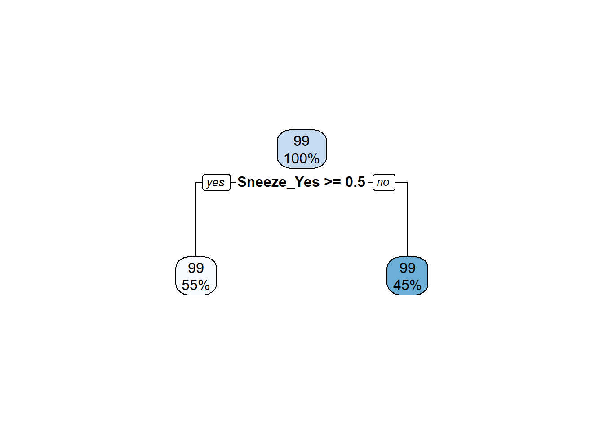

Warning: package 'ranger' was built under R version 4.2.3
library(rpart)
Warning: package 'rpart' was built under R version 4.2.3
Attaching package: 'rpart'
The following object is masked from 'package:dials':
prune
library(glmnet)
Warning: package 'glmnet' was built under R version 4.2.3
Loading required package: Matrix
Warning: package 'Matrix' was built under R version 4.2.2
Attaching package: 'Matrix'
The following objects are masked from 'package:tidyr':
expand, pack, unpack
Loaded glmnet 4.1-7
library(rpart.plot)
Warning: package 'rpart.plot' was built under R version 4.2.3
library(vip)
Warning: package 'vip' was built under R version 4.2.3
Attaching package: 'vip'
The following object is masked from 'package:utils':
vi
data <-readRDS(here('fluanalysis/data/SypAct_clean.rds')) #upload cleaned datatibble(data) #overview of data
# A tibble: 730 × 26
SwollenLymph…¹ Chest…² Chill…³ Nasal…⁴ Sneeze Fatigue Subje…⁵ Heada…⁶ Weakn…⁷
<fct> <fct> <fct> <fct> <fct> <fct> <fct> <fct> <fct>
1 Yes No No No No Yes Yes Yes Mild
2 Yes Yes No Yes No Yes Yes Yes Severe
3 Yes Yes Yes Yes Yes Yes Yes Yes Severe
4 Yes Yes Yes Yes Yes Yes Yes Yes Severe
5 Yes No Yes No No Yes Yes Yes Modera…
6 No No Yes No Yes Yes Yes Yes Modera…
7 No No Yes No No Yes Yes No Mild
8 No Yes Yes Yes Yes Yes Yes Yes Severe
9 Yes Yes Yes Yes No Yes Yes Yes Modera…
10 No Yes No Yes No Yes No Yes Modera…
# … with 720 more rows, 17 more variables: CoughIntensity <fct>, Myalgia <fct>,
# RunnyNose <fct>, AbPain <fct>, ChestPain <fct>, Diarrhea <fct>,
# EyePn <fct>, Insomnia <fct>, ItchyEye <fct>, Nausea <fct>, EarPn <fct>,
# Pharyngitis <fct>, Breathless <fct>, ToothPn <fct>, Vomit <fct>,
# Wheeze <fct>, BodyTemp <dbl>, and abbreviated variable names
# ¹SwollenLymphNodes, ²ChestCongestion, ³ChillsSweats, ⁴NasalCongestion,
# ⁵SubjectiveFever, ⁶Headache, ⁷Weakness
Data Setup
set.seed(123)# Fix the random numbers by setting the seed # This enables the analysis to be reproducible when random numbers are used data_split <-initial_split(data, prop =2.8/4, strata = BodyTemp) #70% training, 30% testing# Create data frames for the two sets:train_data <-training(data_split)test_data <-testing(data_split)#5-fold cross-validation, 5 times repeatedfold_data <-vfold_cv(train_data, v =5, repeats =5, strata = BodyTemp)#Create a recipe for the data and fitting. data_recipe <-recipe(BodyTemp ~ ., data = train_data) %>%step_dummy(all_nominal(), -all_outcomes())
Null model performance
null_recipe <-recipe(BodyTemp ~1, data = train_data) %>%step_dummy(all_nominal(), -all_outcomes())# Logistic model reciperecipe_mod <-linear_reg() %>%set_engine("lm") %>%set_mode("regression")# Model workflow to pair model and recipe null_flow <-workflow() %>%add_model(recipe_mod) %>%add_recipe(null_recipe)#fit the null model to the folds made from the train data set.null_train <-fit_resamples(null_flow, resamples = fold_data)
! Fold1, Repeat1: internal: A correlation computation is required, but `estimate` is constant and ha...
! Fold2, Repeat1: internal: A correlation computation is required, but `estimate` is constant and ha...
! Fold3, Repeat1: internal: A correlation computation is required, but `estimate` is constant and ha...
! Fold4, Repeat1: internal: A correlation computation is required, but `estimate` is constant and ha...
! Fold5, Repeat1: internal: A correlation computation is required, but `estimate` is constant and ha...
! Fold1, Repeat2: internal: A correlation computation is required, but `estimate` is constant and ha...
! Fold2, Repeat2: internal: A correlation computation is required, but `estimate` is constant and ha...
! Fold3, Repeat2: internal: A correlation computation is required, but `estimate` is constant and ha...
! Fold4, Repeat2: internal: A correlation computation is required, but `estimate` is constant and ha...
! Fold5, Repeat2: internal: A correlation computation is required, but `estimate` is constant and ha...
! Fold1, Repeat3: internal: A correlation computation is required, but `estimate` is constant and ha...
! Fold2, Repeat3: internal: A correlation computation is required, but `estimate` is constant and ha...
! Fold3, Repeat3: internal: A correlation computation is required, but `estimate` is constant and ha...
! Fold4, Repeat3: internal: A correlation computation is required, but `estimate` is constant and ha...
! Fold5, Repeat3: internal: A correlation computation is required, but `estimate` is constant and ha...
! Fold1, Repeat4: internal: A correlation computation is required, but `estimate` is constant and ha...
! Fold2, Repeat4: internal: A correlation computation is required, but `estimate` is constant and ha...
! Fold3, Repeat4: internal: A correlation computation is required, but `estimate` is constant and ha...
! Fold4, Repeat4: internal: A correlation computation is required, but `estimate` is constant and ha...
! Fold5, Repeat4: internal: A correlation computation is required, but `estimate` is constant and ha...
! Fold1, Repeat5: internal: A correlation computation is required, but `estimate` is constant and ha...
! Fold2, Repeat5: internal: A correlation computation is required, but `estimate` is constant and ha...
! Fold3, Repeat5: internal: A correlation computation is required, but `estimate` is constant and ha...
! Fold4, Repeat5: internal: A correlation computation is required, but `estimate` is constant and ha...
! Fold5, Repeat5: internal: A correlation computation is required, but `estimate` is constant and ha...
#Compute the RMSE for both training and test dataNull_Met <-collect_metrics(null_train)#RMSE = 1.22
#Model tuning with a gridtree_wf <-workflow() %>%add_model(tune_spec) %>%add_recipe(data_recipe)tree_res <-#Code will take a hot minute to run tree_wf %>%tune_grid(resamples = fold_data,grid = tree_grid )
! Fold1, Repeat1: internal: A correlation computation is required, but `estimate` is constant and ha...
! Fold2, Repeat1: internal: A correlation computation is required, but `estimate` is constant and ha...
! Fold3, Repeat1: internal: A correlation computation is required, but `estimate` is constant and ha...
! Fold4, Repeat1: internal: A correlation computation is required, but `estimate` is constant and ha...
! Fold5, Repeat1: internal: A correlation computation is required, but `estimate` is constant and ha...
! Fold1, Repeat2: internal: A correlation computation is required, but `estimate` is constant and ha...
! Fold2, Repeat2: internal: A correlation computation is required, but `estimate` is constant and ha...
! Fold3, Repeat2: internal: A correlation computation is required, but `estimate` is constant and ha...
! Fold4, Repeat2: internal: A correlation computation is required, but `estimate` is constant and ha...
! Fold5, Repeat2: internal: A correlation computation is required, but `estimate` is constant and ha...
! Fold1, Repeat3: internal: A correlation computation is required, but `estimate` is constant and ha...
! Fold2, Repeat3: internal: A correlation computation is required, but `estimate` is constant and ha...
! Fold3, Repeat3: internal: A correlation computation is required, but `estimate` is constant and ha...
! Fold4, Repeat3: internal: A correlation computation is required, but `estimate` is constant and ha...
! Fold5, Repeat3: internal: A correlation computation is required, but `estimate` is constant and ha...
! Fold1, Repeat4: internal: A correlation computation is required, but `estimate` is constant and ha...
! Fold2, Repeat4: internal: A correlation computation is required, but `estimate` is constant and ha...
! Fold3, Repeat4: internal: A correlation computation is required, but `estimate` is constant and ha...
! Fold4, Repeat4: internal: A correlation computation is required, but `estimate` is constant and ha...
! Fold5, Repeat4: internal: A correlation computation is required, but `estimate` is constant and ha...
! Fold1, Repeat5: internal: A correlation computation is required, but `estimate` is constant and ha...
! Fold2, Repeat5: internal: A correlation computation is required, but `estimate` is constant and ha...
! Fold3, Repeat5: internal: A correlation computation is required, but `estimate` is constant and ha...
! Fold4, Repeat5: internal: A correlation computation is required, but `estimate` is constant and ha...
! Fold5, Repeat5: internal: A correlation computation is required, but `estimate` is constant and ha...
tree_res %>%collect_metrics()
# A tibble: 50 × 8
cost_complexity tree_depth .metric .estimator mean n std_err .config
<dbl> <int> <chr> <chr> <dbl> <int> <dbl> <chr>
1 0.0000000001 1 rmse standard 1.19 25 0.0181 Prepro…
2 0.0000000001 1 rsq standard 0.0361 25 0.00422 Prepro…
3 0.0000000178 1 rmse standard 1.19 25 0.0181 Prepro…
4 0.0000000178 1 rsq standard 0.0361 25 0.00422 Prepro…
5 0.00000316 1 rmse standard 1.19 25 0.0181 Prepro…
6 0.00000316 1 rsq standard 0.0361 25 0.00422 Prepro…
7 0.000562 1 rmse standard 1.19 25 0.0181 Prepro…
8 0.000562 1 rsq standard 0.0361 25 0.00422 Prepro…
9 0.1 1 rmse standard 1.21 25 0.0177 Prepro…
10 0.1 1 rsq standard NaN 0 NA Prepro…
# … with 40 more rows
#show and select besttree_res %>%show_best()
Warning: No value of `metric` was given; metric 'rmse' will be used.
# A tibble: 5 × 8
cost_complexity tree_depth .metric .estimator mean n std_err .config
<dbl> <int> <chr> <chr> <dbl> <int> <dbl> <chr>
1 0.0000000001 1 rmse standard 1.19 25 0.0181 Preprocesso…
2 0.0000000178 1 rmse standard 1.19 25 0.0181 Preprocesso…
3 0.00000316 1 rmse standard 1.19 25 0.0181 Preprocesso…
4 0.000562 1 rmse standard 1.19 25 0.0181 Preprocesso…
5 0.0000000001 4 rmse standard 1.20 25 0.0187 Preprocesso…
Warning: Cannot retrieve the data used to build the model (model.frame: object '..y' not found).
To silence this warning:
Call rpart.plot with roundint=FALSE,
or rebuild the rpart model with model=TRUE.

Fit a LASSO
#BUILD THE MODELlasso_mod <-linear_reg(penalty =tune(), mixture =1) %>%set_engine("glmnet")# Recipe and create Workflowdata_recipe
Recipe
Inputs:
role #variables
outcome 1
predictor 25
Operations:
Dummy variables from all_nominal(), -all_outcomes()
#BUILD THE MODEL AND IMPROVE TRAINING TIMEcores <- parallel::detectCores()cores
[1] 4
f_mod <-rand_forest(mtry =tune(), min_n =tune(), trees =1000) %>%set_engine("ranger",importance ="impurity", num.threads = cores) %>%set_mode("regression")f_wf <-workflow() %>%add_model(f_mod) %>%add_recipe(data_recipe)#TRAIN AND TUNE THE MODELf_mod
Random Forest Model Specification (regression)
Main Arguments:
mtry = tune()
trees = 1000
min_n = tune()
Engine-Specific Arguments:
importance = impurity
num.threads = cores
Computational engine: ranger
extract_parameter_set_dials(f_mod)
Collection of 2 parameters for tuning
identifier type object
mtry mtry nparam[?]
min_n min_n nparam[+]
Model parameters needing finalization:
# Randomly Selected Predictors ('mtry')
See `?dials::finalize` or `?dials::update.parameters` for more information.
f_res <-#This code takes a long time to run! f_wf %>%tune_grid(fold_data,grid =25,control =control_grid(save_pred =TRUE),metrics =NULL)
i Creating pre-processing data to finalize unknown parameter: mtry
#Show and select the bestf_res %>%show_best()
Warning: No value of `metric` was given; metric 'rmse' will be used.
# A tibble: 5 × 8
mtry min_n .metric .estimator mean n std_err .config
<int> <int> <chr> <chr> <dbl> <int> <dbl> <chr>
1 5 27 rmse standard 1.16 25 0.0168 Preprocessor1_Model18
2 3 19 rmse standard 1.16 25 0.0167 Preprocessor1_Model09
3 8 24 rmse standard 1.17 25 0.0167 Preprocessor1_Model04
4 11 36 rmse standard 1.17 25 0.0168 Preprocessor1_Model13
5 6 15 rmse standard 1.17 25 0.0167 Preprocessor1_Model22
#Based on rmse the Lasso model appears to be the best#We will fit final lasson model on split data!lasso_final_test <- lasso_final_wf %>%last_fit(data_split) lasso_final_test %>%collect_metrics()
# A tibble: 2 × 4
.metric .estimator .estimate .config
<chr> <chr> <dbl> <chr>
1 rmse standard 1.16 Preprocessor1_Model1
2 rsq standard 0.0299 Preprocessor1_Model1